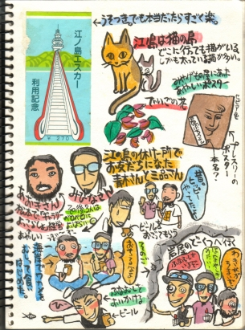

神奈川かまくら篇1  このとき知り合った元ヒッピーのお二人には随分ビールを奢っていただきました。しかし海岸に生えていた海苔を（イラストではワカメとなっていますが、海苔の間違い）むしって食べたり、湧き水を飲んだりと、なかなかワイルドな方々でした。 ＮＥＸＴ・・・
神奈川かまくら篇1

このとき知り合った元ヒッピーのお二人には随分ビールを奢っていただきました。しかし海岸に生えていた海苔を（イラストではワカメとなっていますが、海苔の間違い）むしって食べたり、湧き水を飲んだりと、なかなかワイルドな方々でした。 ＮＥＸＴ・・・